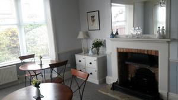
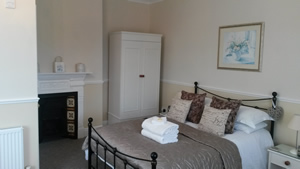
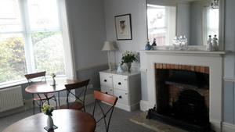
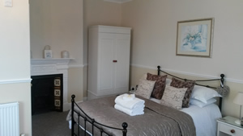
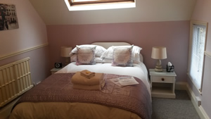
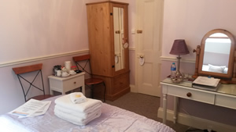
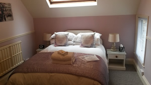
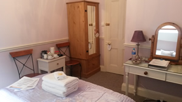

Welcome

 




 




Welcome to Glenberis Bed & Breakfast Hunstanton
Paul and Barbara (formerly of Rose-Fitt House) welcome you to Glenberis, their fabulous newly opened Victorian Guesthouse, recently totally renovated and refitted in a contemporary style but retaining the charm, proportions and beauty of a bygone era. Situated in the lovely Victorian resort of Hunstanton, with its distinct red and white stripped cliffs, it is the only spot on the East Coast which actually facesWest. You can take advantage and enjoy the fantastic sunsets over the sea.
Glenberis is situated in a quite residential area yet only 125yards from the wonderful award winning sandy beach and the start of the Norfolk Coastal Path, leading down to Cromer. We are also close to the Town Centre and local amenities, restaurants, shopping facilities and the Bus Station. Glenberis is in a perfect spot to enjoy the many sporting or leisure activities on offer such as windsurfing, kite surfing, sailing, riding, cycling, walking, croquet, or golf, being close to two championship courses. Many other attractions are close by including Sandringham House, Holkham Hall, and the market town of Burnham Market, Houghton Hall, Norfolk Lavender, Sealife Centre, Princess Theatre, Castle Rising and historic King’s Lynn and Corn Exchange Theatre.
Being a few miles from both RSPB Titchwell and Snettisham Bird Reserves, Glenberis is an ideal spot to base your bird watching break.
You can expect a warm friendly relaxed and welcoming atmosphere and a brilliant breakfast at Glenberis. Great service, comfort, attention to detail and value for money are our aims.
Follow us on Facebook & Twitter - Glenberis B & B
Like our facebook page to keep up with special offers, news and events
For further information or to make a reservation please contact Paul or Barbara
Book now